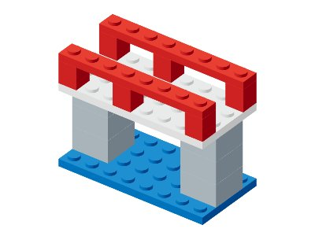
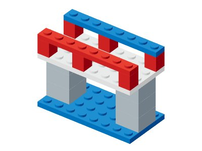

输入 / 上下文

按给定目标提交合法装配顺序；不重排。


字段题图像仅作上下文，请核对 JSON 字段。正反例为程序构造对照，不是模型实测。
完整题面、正误答案与评分 JSON{
"positive": {
"metrics": {
"format": 1,
"success": 1,
"valid": 1,
"legalPrefix": 1,
"coverage": 1,
"submittedCoverage": 1,
"lengthAccuracy": 1,
"duplicateFree": 1
},
"issues": [],
"diagnostics": {
"submittedParts": null,
"expectedParts": 16,
"firstInvalidStep": null,
"matchedParts": null,
"missingParts": [],
"extraParts": []
}
},
"negative": {
"metrics": {
"format": 1,
"success": 0,
"valid": 0,
"legalPrefix": 0,
"coverage": 0,
"submittedCoverage": 1,
"lengthAccuracy": 1,
"duplicateFree": 1
},
"issues": [
"unsupported",
"incomplete"
],
"diagnostics": {
"submittedParts": null,
"expectedParts": 16,
"firstInvalidStep": 0,
"matchedParts": null,
"missingParts": [],
"extraParts": []
}
}
}对照完整符号参考修复颜色，报告错误当前 ID。



字段题图像仅作上下文，请核对 JSON 字段。正反例为程序构造对照，不是模型实测。
完整题面、正误答案与评分 JSON{
"positive": {
"metrics": {
"format": 1,
"success": 1,
"valid": 1,
"partPrecision": 1,
"partRecall": 1,
"partF1": 1,
"bomPrecision": 1,
"bomRecall": 1,
"bomF1": 1,
"edgeF1": 1,
"occupancyIoU": 1,
"coloredOccupancyIoU": 1,
"surfacePrecision": 1,
"surfaceRecall": 1,
"surfaceF1": 1,
"fullStructureSuccess": 1,
"visibleSurfaceSuccess": 1,
"countAccuracy": 1,
"collisionFree": 1,
"supported": 1,
"withinBounds": 1,
"preservation": 1,
"localizationPrecision": 1,
"localizationRecall": 1,
"localizationF1": 1,
"restorationSuccess": 1,
"trueNegative": null,
"falseAlarm": null
},
"issues": [],
"diagnostics": {
"submittedParts": 16,
"expectedParts": 16,
"firstInvalidStep": null,
"matchedParts": 16,
"missingParts": [],
"extraParts": []
}
},
"negative": {
"metrics": {
"format": 1,
"success": 0,
"valid": 1,
"partPrecision": 0.9375,
"partRecall": 0.9375,
"partF1": 0.9375,
"bomPrecision": 0.9375,
"bomRecall": 0.9375,
"bomF1": 0.9375,
"edgeF1": 0.85,
"occupancyIoU": 1,
"coloredOccupancyIoU": 0.9101123595505618,
"surfacePrecision": 0.9333333333333333,
"surfaceRecall": 0.9333333333333333,
"surfaceF1": 0.9333333333333333,
"fullStructureSuccess": 0,
"visibleSurfaceSuccess": 0,
"countAccuracy": 1,
"collisionFree": 1,
"supported": 1,
"withinBounds": 1,
"preservation": 1,
"localizationPrecision": 0,
"localizationRecall": 0,
"localizationF1": 0,
"restorationSuccess": 0,
"trueNegative": null,
"falseAlarm": null
},
"issues": [
"target_mismatch"
],
"diagnostics": {
"submittedParts": 16,
"expectedParts": 16,
"firstInvalidStep": null,
"matchedParts": 15,
"missingParts": [
"rail-1"
],
"extraParts": [
"rail-1"
]
}
}
}